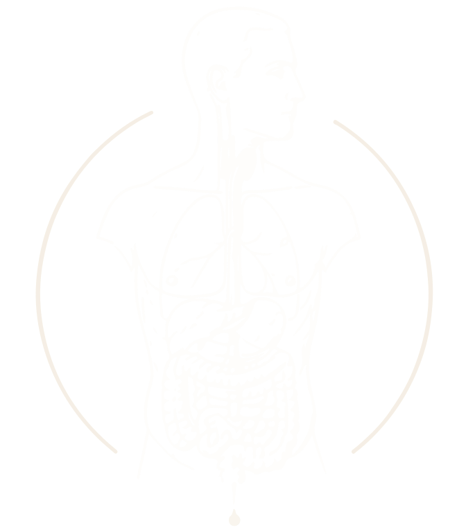
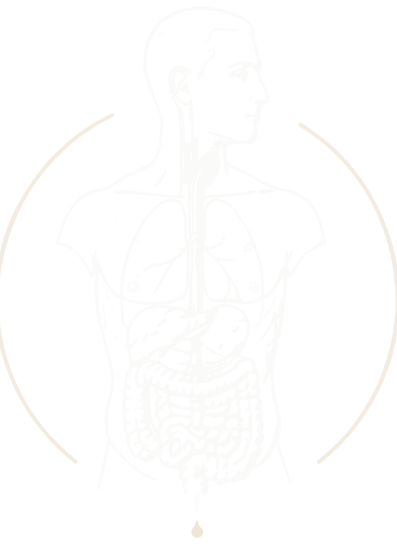
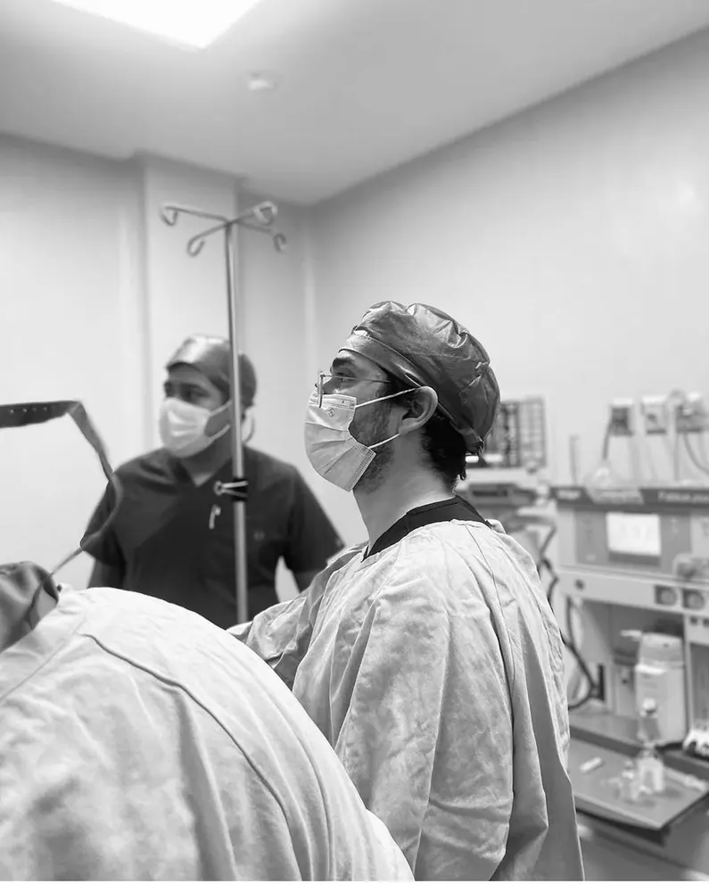
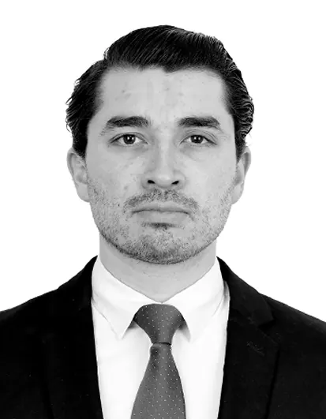
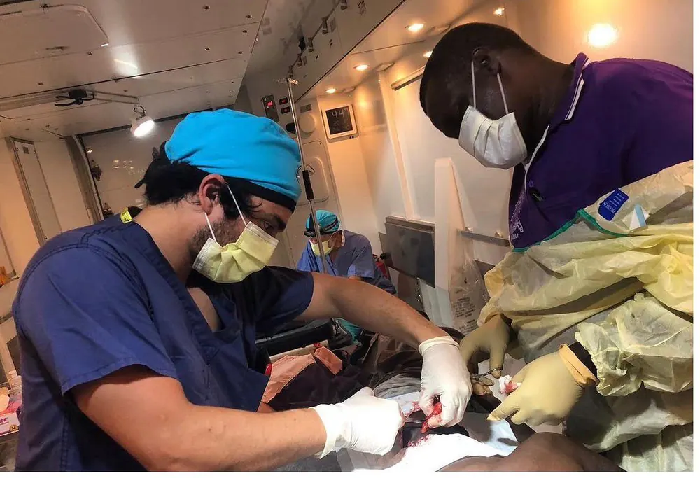
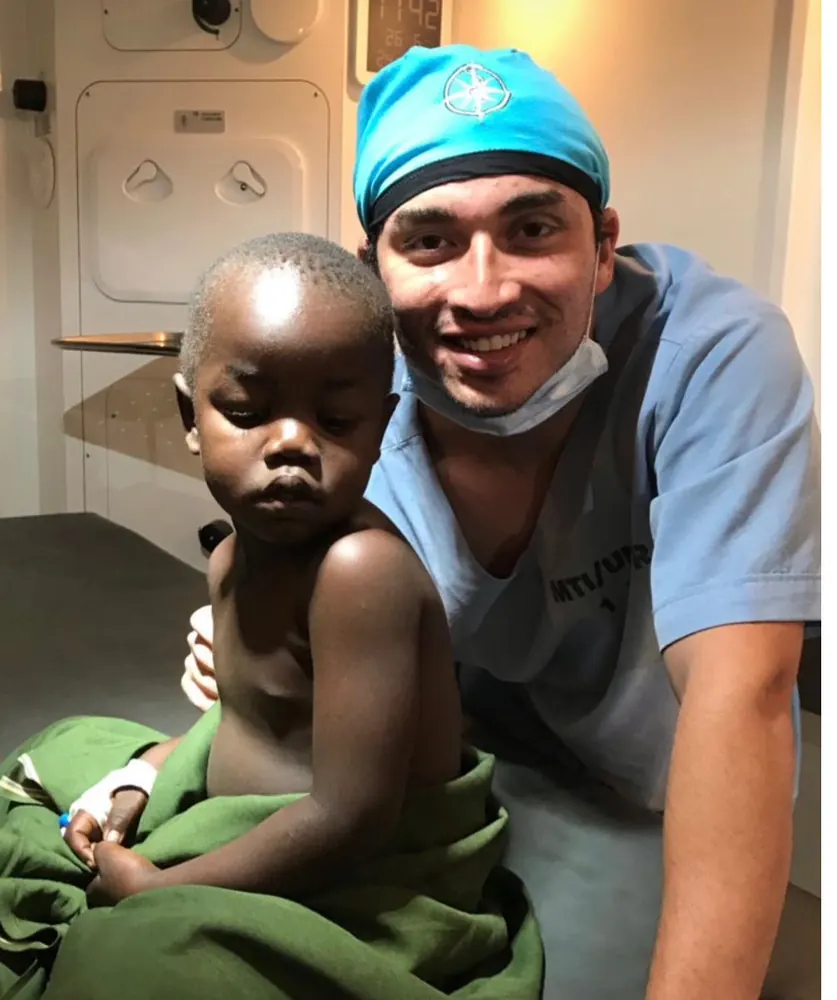
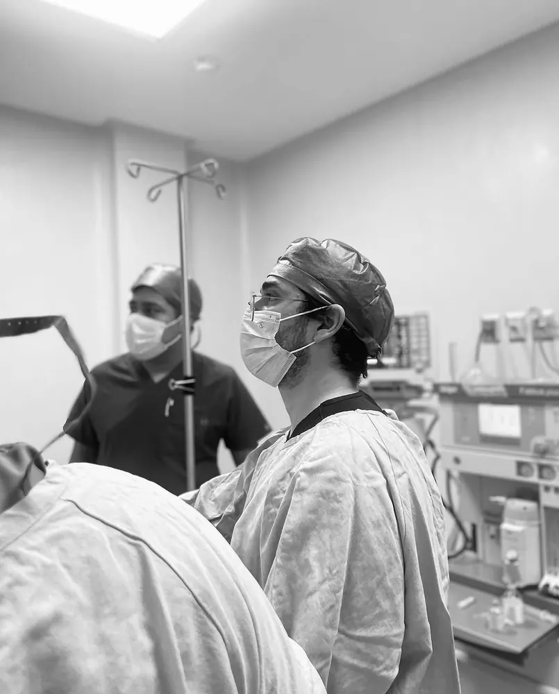
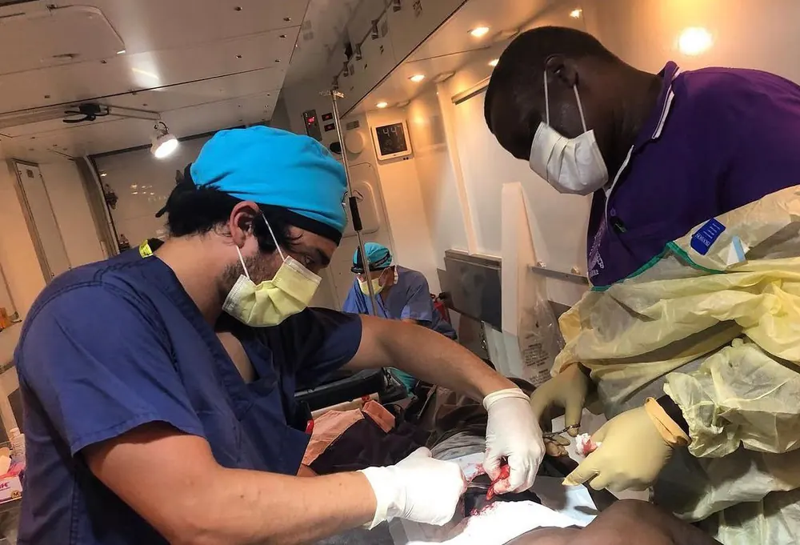

Urgencias
Cirugía de urgencias y trauma
Valoración para dolor abdominal agudo, trauma y cuadros que requieren decisión quirúrgica oportuna.
Selecciona cómo contactar al Dr. Sepúlveda ahora mismo:


Cirugía General
Ciudad de México
Cédula Profesional 13055294 · Cédula de Especialidad 15650464
CMCG · Folio C26109626 · Vigencia 5 años
Ciudad de México
Cirugía General · Ciudad de México
Atención quirúrgica sobria, directa y responsable. La prioridad es orientar con claridad, operar cuando realmente está indicado y acompañar al paciente durante todo el proceso.
Urgencias
Valoración para dolor abdominal agudo, trauma y cuadros que requieren decisión quirúrgica oportuna.
Cirugía electiva
Atención de patología abdominal frecuente, hernias y procedimientos de cirugía general con seguimiento cercano.
Criterio clínico
Diagnóstico claro, riesgos reales y decisión honesta sobre operar, vigilar o referir.
Para consulta programada, urgencia quirúrgica o revisión de un caso, el primer paso es contacto directo y orientación inicial.
Cirugía General · Ciudad de México
Cirugía laparoscópica, urgencias quirúrgicas y patología abdominal electiva en práctica privada en Ciudad de México.
Cédula Profesional 13055294
Cédula de Especialidad 15650464
CMCG · Folio C26109626
Áreas de atención
Dolor abdominal o urgencia
Orientación inicial para dolor abdominal intenso, sospecha de apendicitis, vómito persistente, abdomen inflamado, heridas o golpes.
Cirugía programada
Valoración para problemas de vesícula, hernias, bolitas bajo la piel, quistes o molestias abdominales persistentes.
Acceso a cirugía de calidad
La situación económica no debería ser el único factor que determine el acceso a una cirugía adecuada.
Privacidad
La información médica y personal compartida durante consulta, seguimiento o comunicación digital se maneja bajo principios de confidencialidad y protección de datos conforme a la legislación mexicana aplicable.
Cirugía General
Mi práctica se enfoca en cirugía general, particularmente en urgencias abdominales, trauma y cirugía abdominal electiva. Las áreas y procedimientos descritos a continuación reflejan mi experiencia y disponibilidad de valoración, sin sustituir una consulta médica individual. Cada caso requiere diagnóstico preciso, indicación adecuada y explicación clara de alternativas, riesgos y contexto clínico.
Trayectoria profesional
Formación en hospitales de alto volumen quirúrgico, cirugía de urgencias, trauma, laparoscopía y atención abdominal electiva. Práctica privada en Ciudad de México.

Trayectoria académica
2022 – 2026
UMAE 25, CMN Noreste, IMSS – Universidad de Monterrey · Monterrey, N.L.
Residencia en un centro reconocido por su exigencia y por la calidad en la atención del paciente quirúrgico, complementada por múltiples rotaciones en hospitales de segundo y tercer nivel. Fue una etapa intensa, imperfecta y profundamente formativa, marcada por maestros muy distintos, guardias caóticas, pacientes complejos y formas muy diversas de ejercer la cirugía. De algunos aprendí humildad; de otros, pasión; y de otros, excelencia.
2022 – 2023
HGZ 71 "Benito Coquet Lagunes", IMSS – Universidad Veracruzana · Veracruz, Ver.
Rotaciones por urgencias, consulta externa, hospitalización y quirófano, con exposición a patología quirúrgica frecuente y manejo inicial del paciente quirúrgico en un hospital general. Fue una etapa de aprendizaje acelerado y primeras responsabilidades clínicas dentro de la residencia.
2021 – 2022
Hospital de Especialidades "Antonio Fraga Mouret", CMN La Raza, IMSS · Ciudad de México
Año de servicio social en investigación quirúrgica, con colaboración en un estudio multicéntrico internacional. Durante esta etapa tuve contacto cercano con consulta, quirófano y pase de visita en cirugía de alta especialidad, experiencia que influyó significativamente en mi formación clínica y consolidó mi interés por la cirugía general.
2014 – 2021
Universidad Autónoma de Nuevo León · Monterrey, N.L.
Formación médica en el Hospital Universitario “Dr. José Eleuterio González” de la UANL, con interés temprano en medicina hospitalaria y cirugía. Durante la carrera formé parte de la primera generación del representativo de escalada de la UANL, una experiencia que marcó mi forma de entender la técnica, la persistencia y el compromiso con resolver problemas difíciles.
2019 · 2020
Glenn W. Geelhoed · Uganda (2 rotaciones de 1 mes)
Experiencia formativa en cirugía de recursos limitados en Uganda, con participación en consulta de alto volumen, procedimientos ambulatorios y atención quirúrgica en un entorno hospitalario rural. Una etapa que marcó mi forma de entender el acceso a la cirugía, la adaptación técnica y la atención médica fuera de los sistemas ideales.
Trayectoria personal

El camino
Nunca me interesó una profesión completamente predecible.
El camino
Antes de entrar a medicina ya sabía que quería dedicarme a algo donde las decisiones tuvieran consecuencias reales. Gran parte de mi vida había girado alrededor de actividades como el motocross, la escalada y las artes marciales. No me atraía únicamente el riesgo; me atraía la combinación entre preparación, control técnico y la necesidad de actuar correctamente cuando ya no hay tiempo para dudar.
Mi primer contacto con el quirófano ocurrió antes de iniciar la carrera, durante una guardia nocturna con mi primo, ginecólogo en Monclova. Esa madrugada llegó una cesárea de urgencia. Recuerdo la velocidad, la precisión y la sensación de que cada decisión tenía consecuencias inmediatas. Entendí entonces que la cirugía reunía exactamente lo que estaba buscando.
Con el tiempo confirmé que había encontrado el lugar correcto. La cirugía exige preparación, criterio y la capacidad de mantener la calma cuando las decisiones más importantes deben tomarse en cuestión de segundos. Muchas de las experiencias que más había disfrutado fuera de la medicina compartían esas mismas características.
Hacia el final de la facultad atravesé un periodo de desgaste importante y decidí detenerme un semestre. Ese tiempo lo dediqué a replantear algunas convicciones personales, estudiar en un instituto bíblico en Monterrey y, posteriormente, participar en misiones de cirugía global en Uganda con Mission to Heal.
La experiencia en África cambió profundamente mi manera de entender la medicina. Me permitió ver de cerca las consecuencias reales de la falta de acceso a atención quirúrgica y reforzó una convicción que sigue guiando mi práctica: la calidad de la atención no debería depender del lugar donde una persona nació, vive o busca ayuda.
Filosofía de trabajo
La residencia me enseñó que la cirugía rara vez ocurre en condiciones ideales. Hay cansancio, presión constante, información incompleta y decisiones que deben tomarse con rapidez. También me enseñó que detrás de cada llamada insistente, cada duda repetida o cada familiar angustiado, normalmente existe miedo.
Con el tiempo entendí que una buena cirugía no termina cuando concluye el procedimiento. El resultado depende también de la comunicación, el seguimiento y la disposición del médico para mantenerse involucrado cuando surgen dudas, complicaciones o situaciones inesperadas. Del mismo modo, depende del compromiso del paciente con su recuperación. La mejor atención ocurre cuando médico y paciente trabajan como un equipo con un objetivo común.
Por eso procuro mantener una relación cercana con mis pacientes, explicar las cosas con claridad y asumir responsabilidad durante todo el proceso. La cirugía ocurre en uno de los momentos más vulnerables de la vida de una persona, y creo que el paciente merece saber que no tendrá que enfrentarlo solo.
Uganda · 2019 y 2020
En 2019 y 2020 participé en dos misiones de cirugía global en Uganda con Mission to Heal, bajo la mentoría del Dr. Glenn W. Geelhoed.
Trabajar en un entorno con recursos limitados cambió mi manera de entender la cirugía. Me obligó a distinguir entre lo esencial y lo accesorio: qué elementos realmente modifican el resultado, qué decisiones no pueden delegarse a la tecnología y qué principios quirúrgicos deben sostenerse incluso cuando el entorno no es ideal.
Participé en consulta de alto volumen, procedimientos ambulatorios y capacitación de personal local. Pero el aprendizaje más importante fue entender que la calidad quirúrgica no depende únicamente de contar con más recursos, sino de usarlos con juicio, respetar los principios básicos y reconocer los límites reales del sistema en el que se trabaja.
Esa experiencia sigue influyendo en mi práctica. La cirugía exige técnica, pero también criterio, adaptación y responsabilidad en el uso de cada recurso disponible.


Práctica privada
Inicié práctica privada en 2026 en Ciudad de México. Busco ofrecer atención quirúrgica con rigor técnico, comunicación clara y el mismo sentido de responsabilidad que marcó mi formación institucional.
Creo que el acceso a cirugía de calidad no debería depender únicamente de la capacidad económica del paciente. Por eso, cuando el caso lo permite, procuro orientar con honestidad sobre las opciones disponibles y adaptar la ruta de atención al contexto clínico y personal de cada paciente.
Valores
El paciente merece entender con claridad su diagnóstico, las opciones disponibles y los riesgos reales de cada decisión. Operar sin una indicación adecuada puede ser tan dañino como retrasar una cirugía necesaria.
La técnica quirúrgica no existe para impresionar. Existe para reducir complicaciones, favorecer una recuperación segura y ayudar al paciente a retomar su vida lo antes posible.
El acceso a atención quirúrgica digna no debería depender de la geografía, el sistema de salud o el nivel socioeconómico del paciente. Cuando es posible, procuro orientar cada caso hacia una ruta de atención responsable, realista y acorde al contexto de la persona.
Documento legal
Dr. Rafael Sepúlveda Rodríguez — Cirujano General — Práctica Médica Privada
Versión 1.2 · Ciudad de México, mayo de 2026
1
El Dr. Rafael Sepúlveda Rodríguez, Cirujano General, con domicilio profesional en Ciudad de México, es el responsable del tratamiento de sus datos personales conforme a la Ley Federal de Protección de Datos Personales en Posesión de los Particulares (LFPDPPP).
2
Se recaban los siguientes datos:
3
Finalidades primarias:
Finalidades secundarias (puede negarlas sin afectar su atención):
4
Los datos de salud son datos personales sensibles. Su tratamiento requiere su consentimiento expreso y por escrito, el cual se recabará mediante el documento "Acuse de Recepción y Consentimiento del Aviso de Privacidad" al inicio de la relación médico-paciente.
5
Sus datos podrán transferirse a: hospitales o médicos especialistas para continuidad de atención; laboratorios e instituciones de imagen; autoridades sanitarias o judiciales por obligación legal; aseguradoras o despachos de facturación con su autorización previa. En ningún caso se venderán ni comercializarán sus datos con fines publicitarios.
6
Los datos proporcionados a través de llamadas, WhatsApp, correo electrónico u otros medios digitales son tratados bajo los mismos principios de confidencialidad. Estos canales no son equivalentes a una consulta médica formal y no generan responsabilidad profesional fuera del contexto clínico establecido.
7
No se utilizarán imágenes identificables del paciente, casos clínicos con datos identificadores, testimonios ni contenido en redes sociales o material publicitario sin autorización expresa, específica e independiente por escrito. Esta autorización es voluntaria y su negativa no afecta la atención médica.
8
Tiene derecho a Acceder, Rectificar, Cancelar u Oponerse al tratamiento de sus datos personales. Para ejercerlos, envíe solicitud a contacto@dr-sepulveda.com indicando: nombre completo, descripción del derecho que desea ejercer y documentación de identidad. Respuesta en máximo 20 días hábiles.
9
Puede revocar su consentimiento para finalidades secundarias en cualquier momento enviando solicitud a contacto@dr-sepulveda.com. La revocación no tendrá efectos retroactivos.
10
Se implementan medidas administrativas, técnicas y físicas para proteger sus datos: almacenamiento seguro de expedientes, acceso restringido, comunicaciones cifradas cuando es posible, y destrucción segura de información en soporte físico.
11
Para comunicación, agendamiento y seguimiento se utilizan herramientas como WhatsApp, correo electrónico y, en el futuro, plataformas vinculadas al Surgical Performance Institute (SPI). El uso de cualquier herramienta que implique tratamiento adicional de datos será informado y requerirá consentimiento específico.
12
El tratamiento de datos de pacientes menores de edad requiere autorización del padre, madre o tutor legal.
13
El sitio web www.dr-sepulveda.com puede utilizar tecnologías de seguimiento básicas para funcionamiento técnico. No se utilizan cookies con fines publicitarios ni se comparte información de navegación con terceros para marketing.
14
Si considera que su derecho a la protección de datos personales ha sido vulnerado, podrá acudir ante la Secretaría Anticorrupción y Buen Gobierno, o la autoridad que legalmente la sustituya.
15
Las modificaciones serán comunicadas a través del sitio web www.dr-sepulveda.com o por correo electrónico cuando sea posible.
16
Al proporcionar sus datos para recibir atención médica, el paciente reconoce haber sido informado sobre el tratamiento de sus datos conforme a este aviso. El consentimiento expreso para datos sensibles se recabará mediante el documento "Acuse de Recepción y Consentimiento del Aviso de Privacidad".
Aviso Simplificado · Web / WhatsApp / Primer contacto
El Dr. Rafael Sepúlveda Rodríguez, Cirujano General, con domicilio profesional en Ciudad de México, es responsable del tratamiento de sus datos personales. Los datos que proporcione podrán utilizarse para responder su solicitud, agendar consulta, dar seguimiento clínico, integrar expediente, coordinar atención médica, facturar y cumplir obligaciones legales. No se venderán ni comercializarán sus datos. No se usarán imágenes o testimonios identificables con fines publicitarios sin autorización expresa por escrito. Puede ejercer derechos ARCO escribiendo a contacto@dr-sepulveda.com.
Aviso de Privacidad Integral elaborado conforme a la LFPDPPP. Dr. Rafael Sepúlveda Rodríguez · Versión 1.2 · Ciudad de México, mayo de 2026.
Dr. Rafael Sepúlveda Rodríguez
Cirugía General · Ciudad de México
Teléfono
Atención telefónica las 24 horas
Respuesta en horario de consulta
Correo electrónico
Horario de consulta
Lun – Vie
8:00 – 20:00 h
Ciudad de México
Urgencias
Disponible 24/7
Para urgencias quirúrgicas fuera de horario, llame directamente al (55) 4762 7687
Aviso: Los medios de contacto digitales (WhatsApp, correo electrónico) no son sustitutos de una consulta médica formal y no generan responsabilidad profesional fuera del contexto clínico establecido. Para urgencias, llame directamente.
General Surgery · Mexico City
Private general surgery care in Mexico City for English-speaking patients, with direct communication, careful evaluation and a sober explanation of risks, alternatives and next steps.
Professional License 13055294
Specialty License 15650464
CMCG · Folio C26109626
Care areas
The purpose of the first evaluation is to understand the problem, determine whether surgery is truly indicated, and explain the safest available path. This website does not replace an in-person medical evaluation.
EMERGENCY SURGERY
Evaluation and surgical decision-making for acute abdomen, appendicitis, bowel obstruction, intestinal perforation, complicated diverticular disease, trauma and other urgent conditions.
ELECTIVE SURGERY
Planned surgical care for common abdominal conditions, with emphasis on indication, operative technique, hospital safety and postoperative follow-up.
CLINICAL JUDGMENT
A surgical consultation should clarify the diagnosis, available options and real risks. Not every surgical problem requires immediate surgery; not every delay is safe.
Professional background
Dr. Rafael Sepúlveda Rodríguez is a general surgeon in Mexico City. His training took place in high-volume public hospitals in Mexico, with exposure to emergency surgery, trauma, abdominal surgery, laparoscopy and the care of critically ill surgical patients.
Professional formation
My background was shaped through high-volume public hospital surgery, emergency care, academic research and early surgical work in resource-limited settings.

2023–2026
General Surgery Residency R2–R4 · Universidad de Monterrey
Residency training in a center known for its demanding environment and its commitment to surgical patient care, complemented by multiple rotations through second- and third-level hospitals. It was an intense, imperfect and deeply formative stage, shaped by very different mentors, difficult on-call shifts, complex patients and diverse ways of practicing surgery. From some I learned humility; from others, passion; and from others, excellence.
2022–2023
General Surgery Residency R1 · Universidad Veracruzana
First year of surgical training in Veracruz, with rotations through the emergency department, outpatient clinic, hospital ward and operating room. This stage provided exposure to common surgical pathology and the initial management of surgical patients in a general hospital, marking the beginning of accelerated learning and early clinical responsibility within residency.
2021–2022
Research social service
A year dedicated to surgical research and collaboration in an international multicenter study. During this stage, I had close exposure to outpatient care, the operating room and inpatient rounds in highly specialized surgery, an experience that significantly shaped my clinical formation and consolidated my interest in general surgery.
2014–2021
Medical Degree
Medical education at the Hospital Universitario “Dr. José Eleuterio González” of UANL in Monterrey, Nuevo León, with an early interest in hospital medicine and surgery. During medical school, I was part of the first generation of UANL’s climbing team, an experience that shaped my understanding of technique, persistence and the commitment to solving difficult problems.
Global surgery
In 2019 and 2020, I participated in two surgical missions in Uganda with Mission to Heal. Working in a resource-limited environment exposed me to a volume and variety of surgical disease that is difficult to appreciate from textbooks alone. More importantly, it reinforced a lesson that continues to shape my practice today: sound surgical judgment becomes even more important when resources are scarce, and access to safe, dignified surgical care should not depend entirely on geography or financial circumstances.

Surgical philosophy
Good surgery is rarely about heroics. More often, it is about judgment, discipline and responsibility.
These are the principles that guide my work:
Patients deserve to understand what they have, what options exist and what the real risks are. Unnecessary surgery can be as harmful as delayed surgery.
Surgical technique does not exist to impress. It exists to reduce harm, prevent complications and help patients return to their lives.
The quality of surgical care should not be determined only by geography, health system or socioeconomic status.
Contact
Phone
Telephone attention available 24/7 for urgent surgical contact.
Best for scheduling, orientation and sending basic context before a formal evaluation.
Location
Mexico City
Care is provided in authorized hospital facilities according to clinical indication, availability and hospital credentialing.Disclaimer: WhatsApp and email are not substitutes for a formal medical consultation and do not create a physician-patient relationship outside an established clinical context. For severe or rapidly worsening symptoms, seek immediate emergency care.
Privacy notice
Dr. Rafael Sepúlveda Rodríguez, General Surgeon, is responsible for the handling of personal and health information provided for medical care, scheduling, follow-up, medical records, billing and legal compliance under Mexican privacy law. Health information is sensitive data and is handled with reinforced confidentiality.
This English text is an informational summary for English-speaking patients. The formal legal privacy notice remains the Spanish Aviso de Privacidad Integral available on this website.